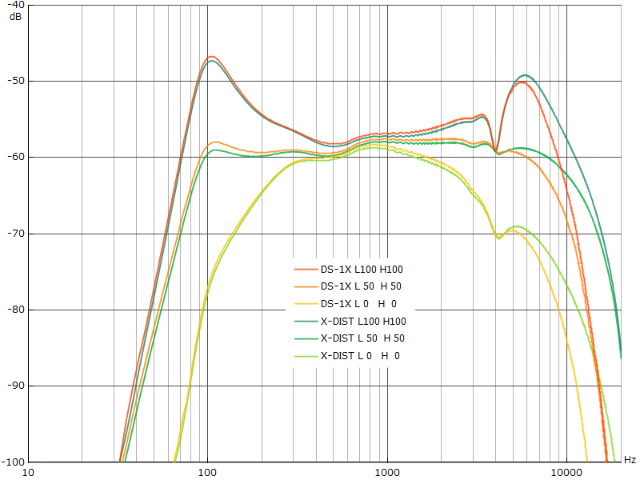

BOSS DS-1X Distortion 修理・特性測定
2022年08月23日 カテゴリー：修理・改造・解析
音が出ないジャンク状態のBOSS DS-1X Distortionを手に入れたので、修理し特性を測定しました。色は違いますが、OD-1Xと全く同じ基板のようです。
【修理】
何やらカラカラと音がしており中を見てみると、電源部のインダクタが端子部分から外れていました。前の持ち主は半田付けで修理を試みたようです。現在は生産終息品のインダクタ（型番ELL6UH221M）だったので、大きさが違う別のもの（型番SHP0745P-F221A）を何とか取り付けました。これでOD-1Xと同じ3.2Vが出力され、音も無事に出るようになり修理完了です。動作確認後、交換したインダクタ付近はホットボンドで固めて動かないようにしておきました。インダクタは漏れ磁束があるので本来は取り付ける向きも同じにした方がいいのですが、磁気シールド構造になっているので大丈夫でしょう。
【特性測定】※各ノブの設定は最大を100として記載
BOSS公式サイトには、多次元的信号処理技術「MDP」を用いていると記載があり、複雑な信号処理が施されていると思われます。単純な特性測定ではあまり意味がないかもしれません。
▽波形・倍音（LOW 0 HIGH 0 DIST 50）
対称な波形で、奇数次倍音が多いです。
▽DIST変化時の周波数特性（LOW 50 HIGH 50）
設定値0～100で約40dB変化します。ゲインを上げたとき高音域が微妙に変化するようです。
▽LOW変化時の周波数特性（HIGH 50 DIST 0）
100Hz付近を増幅しますが、そこまで特殊な動きではありません。
▽HIGH変化時の周波数特性（LOW 50 DIST 0）

OD-1Xより高音域側が動いています。0～25と50以降では、4kHz付近がほとんど上がらないよう調節されています。
▽GT-1000CORE内蔵X-DISTとの比較（DIST 0）※GT-1000COREの設定値-50～+50は0～100として記載

5kHz以降の高音域の出方が違っており、内部処理が変更されているということがわかります。ただDS-1Xの内部プログラムがアップデートされている可能性があるため、現在はどうなっているのか不明です。